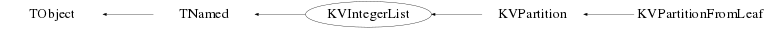

class KVIntegerList: public TNamed
KVIntegerList
Permet de gerer une liste de nombres entiers positifs
La classe dérive de TNamed, le champ TNamed::fName contient le nom formaté de la partition et TNamed::fTitlepermet de stocker la population
L'écriture/lecture dans un fichier .root se fait en utilisant le streamer de TNamed
Les valeurs sont triées par ordre décroissant avec gestion de l'occurence
Les deux exemples suivants montrent les deux facons de remplir une liste:
Exemple 1:
Les methodes de type Fill(), remplissent en une fois la liste et mets à jour les grandeurs reliées
KVIntegerList* ilist = new KVIntegerList();
Int_t tab[10]={1,3,6,4,9,7,3,59,8,160};
ilist->Fill(tab,10);
ilist->Print();
Info in : 160 59 9 8 7 6 4 3(2) 1 : population 1
Exemple 2:
Les methodes de type Add(), remplit successivement la liste, avant d'utiliser les grandeurs reliéesl'utilisateur doit appeler la méthode CheckForUpdate(), pour que la mise a jour du nom soit faite
par contre le nombre d'elements est mis a jour automatiquement
KVIntegerList* ilist = new KVIntegerList();
ilist->Add(23,6);
ilist->Add(12);
Int_t tab[3]={1,3,6};
ilist->Add(tab,3);
ilist->CheckForUpdate();
ilist->Print();
Info in : 23(6) 12 6 3 1 : population 1
ilist->Remove(23,3);
ilist->Print();
Info in : 23(6) 12 6 3 1 : population 1 !!! pour le nom RIEN A CHANGER
ilist->GetNbre();
(const Int_t)7 le nombre, lui est mis à jour
ilist->CheckForUpdate();
ilist->Print();
Info in : 23(3) 12 6 3 1 : population 1 OK : les modifs ont été prises en compte
ilist->GetNbre()
(const Int_t)7
Les methodes de type Remove(), retirent des valeurs de la liste, là encore l'utilisateur doit appeler
la méthode CheckForUpdate(), pour que la mise a jour soit faite
Les grandeurs disponibles sont:
- le nombre d'entiers, ie la multiplicité GetNbre()
- le nom de la partition definie comme suit : ent1(occ) ent2 ent3(occ3), où entre parenthèses
sont notées les occurences aupérieures à 1 d'une valeur
- la population GetPopulation(), permet de gérer un ensemble de partitions (KVPartitionManager)
Function Members (Methods)
public:
| KVIntegerList() | |
| KVIntegerList(const KVIntegerList&) | |
| virtual | ~KVIntegerList() |
| void | TObject::AbstractMethod(const char* method) const |
| void | Add(TArrayI* tab) |
| void | Add(Int_t val) |
| void | Add(Double_t val) |
| void | Add(Int_t* tab, Int_t mult) |
| void | Add(Double_t* tab, Int_t mult) |
| void | Add(Int_t val, Int_t freq) |
| void | Add(Double_t val, Int_t freq) |
| void | AddPopulation(Int_t pop) |
| virtual void | TObject::AppendPad(Option_t* option = "") |
| virtual void | TObject::Browse(TBrowser* b) |
| void | CheckForUpdate() |
| static TClass* | Class() |
| virtual const char* | TObject::ClassName() const |
| virtual void | Clear(Option_t* option = "") |
| virtual TObject* | TNamed::Clone(const char* newname = "") const |
| virtual Int_t | Compare(const TObject* obj) const |
| Bool_t | Contains(Int_t val) const |
| virtual void | Copy(TObject& named) const |
| Int_t* | CreateTableOfValues() |
| TArrayI* | CreateTArrayI() |
| TNamed* | CreateTNamed() |
| virtual void | TObject::Delete(Option_t* option = "")MENU |
| virtual Int_t | TObject::DistancetoPrimitive(Int_t px, Int_t py) |
| virtual void | TObject::Draw(Option_t* option = "") |
| virtual void | TObject::DrawClass() constMENU |
| virtual TObject* | TObject::DrawClone(Option_t* option = "") constMENU |
| virtual void | TObject::Dump() constMENU |
| virtual void | TObject::Error(const char* method, const char* msgfmt) const |
| virtual void | TObject::Execute(const char* method, const char* params, Int_t* error = 0) |
| virtual void | TObject::Execute(TMethod* method, TObjArray* params, Int_t* error = 0) |
| virtual void | TObject::ExecuteEvent(Int_t event, Int_t px, Int_t py) |
| virtual void | TObject::Fatal(const char* method, const char* msgfmt) const |
| virtual void | Fill(Int_t* tab, Int_t mult) |
| virtual void | TNamed::FillBuffer(char*& buffer) |
| virtual TObject* | TObject::FindObject(const char* name) const |
| virtual TObject* | TObject::FindObject(const TObject* obj) const |
| virtual Option_t* | TObject::GetDrawOption() const |
| static Long_t | TObject::GetDtorOnly() |
| Int_t | GetFrequency(Int_t val) const |
| virtual const char* | TObject::GetIconName() const |
| Ssiz_t | GetLengthName() const |
| virtual const char* | TNamed::GetName() const |
| Int_t | GetNbre() const |
| virtual char* | TObject::GetObjectInfo(Int_t px, Int_t py) const |
| static Bool_t | TObject::GetObjectStat() |
| virtual Option_t* | TObject::GetOption() const |
| Int_t | GetPopulation() const |
| virtual const char* | TNamed::GetTitle() const |
| virtual UInt_t | TObject::GetUniqueID() const |
| virtual Bool_t | TObject::HandleTimer(TTimer* timer) |
| virtual ULong_t | TNamed::Hash() const |
| virtual void | TObject::Info(const char* method, const char* msgfmt) const |
| virtual Bool_t | TObject::InheritsFrom(const char* classname) const |
| virtual Bool_t | TObject::InheritsFrom(const TClass* cl) const |
| virtual void | TObject::Inspect() constMENU |
| void | TObject::InvertBit(UInt_t f) |
| virtual TClass* | IsA() const |
| virtual Bool_t | TObject::IsEqual(const TObject* obj) const |
| virtual Bool_t | TObject::IsFolder() const |
| Bool_t | TObject::IsOnHeap() const |
| virtual Bool_t | TNamed::IsSortable() const |
| Bool_t | TObject::IsZombie() const |
| virtual void | TNamed::ls(Option_t* option = "") const |
| void | TObject::MayNotUse(const char* method) const |
| virtual Bool_t | TObject::Notify() |
| void | TObject::Obsolete(const char* method, const char* asOfVers, const char* removedFromVers) const |
| static void | TObject::operator delete(void* ptr) |
| static void | TObject::operator delete(void* ptr, void* vp) |
| static void | TObject::operator delete[](void* ptr) |
| static void | TObject::operator delete[](void* ptr, void* vp) |
| void* | TObject::operator new(size_t sz) |
| void* | TObject::operator new(size_t sz, void* vp) |
| void* | TObject::operator new[](size_t sz) |
| void* | TObject::operator new[](size_t sz, void* vp) |
| KVIntegerList& | operator=(const KVIntegerList&) |
| virtual void | TObject::Paint(Option_t* option = "") |
| virtual void | TObject::Pop() |
| virtual void | Print(Option_t* option = "") const |
| virtual Int_t | TObject::Read(const char* name) |
| virtual void | TObject::RecursiveRemove(TObject* obj) |
| Bool_t | Remove(Int_t val) |
| Bool_t | Remove(Int_t val, Int_t freq) |
| Bool_t | RemoveAll(Int_t val) |
| void | TObject::ResetBit(UInt_t f) |
| void | ResetPopulation() |
| virtual void | TObject::SaveAs(const char* filename = "", Option_t* option = "") constMENU |
| virtual void | TObject::SavePrimitive(ostream& out, Option_t* option = "") |
| void | TObject::SetBit(UInt_t f) |
| void | TObject::SetBit(UInt_t f, Bool_t set) |
| virtual void | TObject::SetDrawOption(Option_t* option = "")MENU |
| static void | TObject::SetDtorOnly(void* obj) |
| virtual void | TNamed::SetName(const char* name)MENU |
| virtual void | TNamed::SetNameTitle(const char* name, const char* title) |
| static void | TObject::SetObjectStat(Bool_t stat) |
| void | SetPopulation(Int_t pop) |
| virtual void | TNamed::SetTitle(const char* title = "")MENU |
| virtual void | TObject::SetUniqueID(UInt_t uid) |
| virtual void | ShowMembers(TMemberInspector&) |
| virtual Int_t | TNamed::Sizeof() const |
| virtual void | Streamer(TBuffer&) |
| void | StreamerNVirtual(TBuffer& ClassDef_StreamerNVirtual_b) |
| virtual void | TObject::SysError(const char* method, const char* msgfmt) const |
| Bool_t | TObject::TestBit(UInt_t f) const |
| Int_t | TObject::TestBits(UInt_t f) const |
| virtual void | TObject::UseCurrentStyle() |
| virtual void | TObject::Warning(const char* method, const char* msgfmt) const |
| virtual Int_t | TObject::Write(const char* name = 0, Int_t option = 0, Int_t bufsize = 0) |
| virtual Int_t | TObject::Write(const char* name = 0, Int_t option = 0, Int_t bufsize = 0) const |
protected:
| virtual void | add_values(Int_t val, Int_t freq) |
| virtual void | DeducePartitionFromName() |
| virtual void | DeducePartitionFromTNamed() |
| virtual void | DeducePopulationFromTitle() |
| virtual void | TObject::DoError(int level, const char* location, const char* fmt, va_list va) const |
| void | init() |
| void | TObject::MakeZombie() |
| virtual Bool_t | remove_values(Int_t val, Int_t freq) |
| virtual void | ResetRegle() |
| virtual void | SetPartition(const Char_t* par) |
| Bool_t | ToBeUpdated() |
| virtual void | Update() |
Data Members
public:
| enum { | kHastobeComputed | |
| }; | ||
| enum TObject::EStatusBits { | kCanDelete | |
| kMustCleanup | ||
| kObjInCanvas | ||
| kIsReferenced | ||
| kHasUUID | ||
| kCannotPick | ||
| kNoContextMenu | ||
| kInvalidObject | ||
| }; | ||
| enum TObject::[unnamed] { | kIsOnHeap | |
| kNotDeleted | ||
| kZombie | ||
| kBitMask | ||
| kSingleKey | ||
| kOverwrite | ||
| kWriteDelete | ||
| }; |
protected:
| Ssiz_t | fLength | ! Longueur du nom de la liste/partition usilisée dans Compare |
| Int_t | fLimiteRegle | !-> taille max de fRegle |
| Int_t | fMult | ! Nombre d'éléments dans la liste |
| TString | TNamed::fName | object identifier |
| Int_t | fPop | ! population de la liste/partition consideree, permet le comptage de partitions identiques dansun lot de donée |
| TArrayI* | fRegle | ! tableau d'entiers où sont stockée l'occurence des valeurs |
| TString | TNamed::fTitle | object title |
Class Charts
{kind=link}
{kind=link}
{kind=link}
{kind=link}

Function documentation
void Print(Option_t* option = "") const
Classe dérivée de TNamed, Imprime la liste formattée et la population associée
void SetPartition(const Char_t* par)
protected method, utilisée par le Streamer qui utilise le champ fName de la classe TNamed voir également KVIntegerList::DeducePartitionFromTNamed
Bool_t ToBeUpdated()
protected method, test si les grandeurs associées à la liste doivent etre mises a jour
void CheckForUpdate()
void Update()
protected method, Mise a jour du nom de la partition (via SetName()), de sa longueur (fLength) Le bit kHastobeComputed es mis à 0 pour indiquer que la mise à jour a été faite
void Fill(Int_t* tab, Int_t mult)
La liste est re initialisée via KVIntegerList::Clear() remplie, puis mise à jour KVIntegerList::Update()
void add_values(Int_t val, Int_t freq)
protected method, Ajout de "freq" fois la valeur val Verification de la taille du tableau (fLimiteRegle) et extension si besoin Routine appelée par toutes les autres routines Add(...), c'est celle-ci qui doit etre derivée dans les classes filles Le bit kHastobeComputed es mis à 1 pour indiquer la nécéssité de mettre a jour la partition voir KVIntegerList::CheckForUpdate() Cette methode incremente la multiplicité fMult
Bool_t remove_values(Int_t val, Int_t freq)
protected method, On retire "freq" fois la valeur val la methode retourne kTRUE si cette valeur etait effectivement presente, kFALSE sinon Si freq > la frequence initiale ( KVIntegerList::GetFrequency(Int_t ) )de la valeur, on la retire complétement Le bit kHastobeComputed es mis à 1 pour indiquer la nécéssité de mettre a jour la partition voir KVIntegerList::CheckForUpdate() Cette methode est appelée par les autres routines de type Remove...(...), c'est celle-ci qui doit etre derivée dans les classes filles Cette methode décremente la multiplicité fMult
Bool_t Remove(Int_t val, Int_t freq)
On retire "freq" fois la valeur val la methode retourne kTRUE si cette valeur etait effectivement presente, kFALSE sinon Si freq > la frequence initiale ( KVIntegerList::GetFrequency(Int_t ) )de la valeur, on la retire complétement
Bool_t Remove(Int_t val)
On retire 1 fois la valeur val la methode retourne kTRUE si cette valeur etait effectivement presente, kFALSE sinon Le bit kHastobeComputed es mis à 1 pour indiquer la nécéssité de mettre a jour la partition voir KVIntegerList::CheckForUpdate()
Bool_t RemoveAll(Int_t val)
Reture completement la valeur val la methode retourne kTRUE si cette valeur etait effectivement presente, kFALSE sinon Le bit kHastobeComputed es mis à 1 pour indiquer la nécéssité de mettre a jour la partition voir KVIntegerList::CheckForUpdate()
Int_t GetPopulation() const
TArrayI* CreateTArrayI()
Cree un objet TArrayI de dimension fMult ( KVIntegerList::GetNbre() ) et rempli par ordre decroissant toutes les valeurs de la partition L'objet cree doit etre effacé après utilisation par l'utilisateur
Int_t* CreateTableOfValues()
Cree un objet tableau d'entier de dimension fMult ( KVIntegerList::GetNbre() ) et rempli par ordre decroissant toutes les valeurs de la partition L'objet cree doit etre effacé après utilisation par l'utilisateur
Int_t Compare(const TObject* obj) const
Classe dérivée de TNamed Compare deux objets de type KVIntegerList, le premier test concerne la longueur du nom (KVIntegerList::GetLengthName()) Si elle est identique, on test caractere par caractere, les deux noms TNamed::GetName() Retourne 0 si les noms des deux KVIntegerList sont exactement les memes, -1 sinon;
Int_t GetFrequency(Int_t val) const
Retourne l'occurence de la valeur "val", si elle n'est pas présente
dans la liste retourne -1
Ssiz_t GetLengthName() const
void Streamer(TBuffer& )
Streamer specifique l'écriture dans un fichier root se fait par l'intermédiaire de la classe TNamed seul, le nom et la partition et sa population sont enregistrées dans le fichier la lecture utilise aussi le streamer de TNamed, puis il y a un appel a la routine protected DeducePartitionFromTNamed() qui permet de recréer complètement l'objet KVIntegerList
void DeducePartitionFromTNamed()